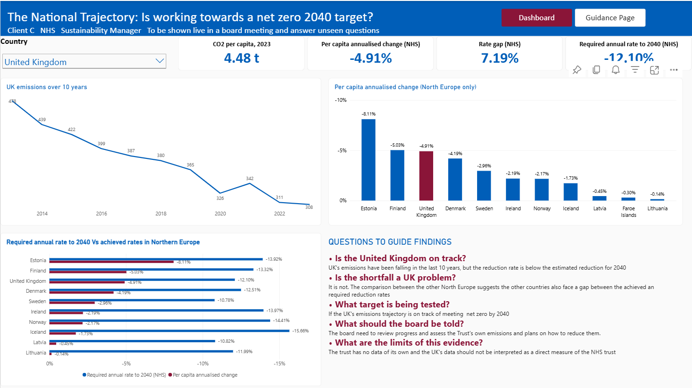
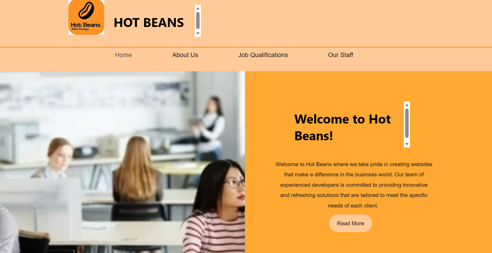
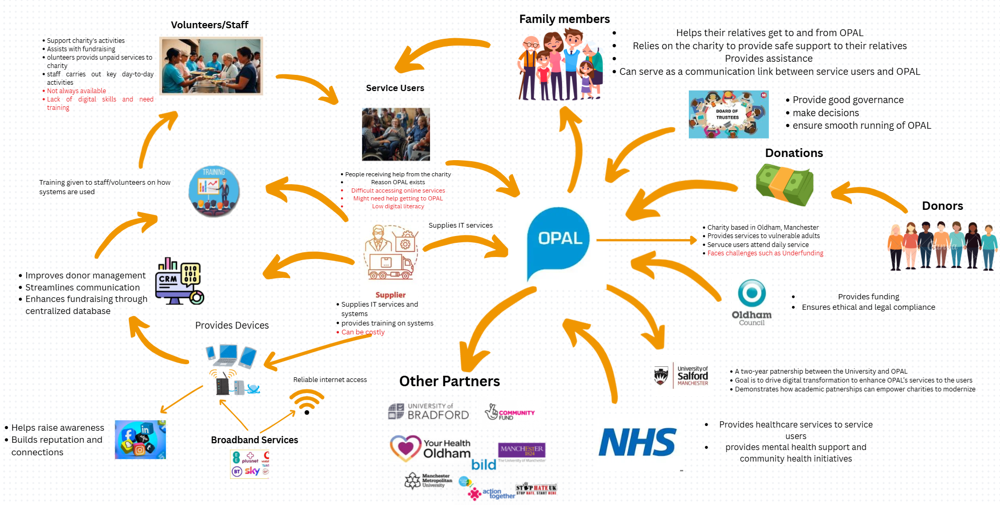

MY PROJECTS
Business Showcase
This page showcases some of the projects I have completed throughout my education and personal development. These projects have allowed me to apply my Business IT knowledge, develop technical skills and explore how digital solutions can address real-world business challenges.
1. UK Emissions Dashboard – Power BI

Project Overview
As part of my Business Intelligence and Dashboards module, I developed an interactive Power BI dashboard examining whether the UK's emissions trajectory is on track to meet its 2040 net-zero target. The intended audience was the Sustainability Manager of an NHS Trust, who would use the dashboard to support a board-level discussion.
My Role
I worked with three CSV datasets, imported the data into Power BI and used Power Query to clean and prepare it. I also established relationships between the datasets using country codes and years before creating visualisations to communicate emissions trends.
Problem
The Sustainability Manager needed a clear and accessible way to explore emissions data and assess progress towards the UK's 2040 net-zero target.
Solution
I developed an interactive dashboard that presents emissions information through visualisations, making it easier to identify trends, compare figures and explore progress over time.
Skills Demonstrated
Power BI, Power Query, data cleaning, data modelling, data visualisation, analytical thinking and problem-solving.
2. Website Development – Sixth Form Project

Project Overview
During Sixth Form, I completed a website development project based on a fictional company looking to recruit web developers to join its team. The aim was to create an online platform that presented the company and its recruitment opportunities professionally.
My Role
I was responsible for planning, designing and developing the website. Before building it, I created wireframes and mock-ups to plan the layout, structure and appearance of the website. I then used Wix to develop the final site.
Problem
The fictional company needed an online presence that could communicate its recruitment needs and attract potential web developer applicants.
Solution
I planned the website using wireframes and mock-ups, then developed the site using Wix. This allowed me to turn my initial design ideas into a structured website.
Skills Demonstrated
Website development, Wix, wireframing, prototyping, visual design, planning and user experience.
4. Systems Analysis and Design – University Module

Project Overview
Through a university module, I developed an understanding of systems analysis and design techniques used to explore business problems, understand user requirements and plan potential digital solutions.
My Work
As part of the module, I created rich pictures, wireframes and use case diagrams. These techniques helped me represent business situations, plan user interfaces and illustrate how users interact with a proposed system.
Purpose
Before developing a digital system, it is important to understand the problem it needs to solve and the needs of its users. These diagrams and design techniques help organise requirements and communicate ideas clearly.
Skills Demonstrated
Systems analysis, requirements gathering, visual modelling, wireframing, use case diagrams, user-focused design and analytical thinking.
5. Personal Portfolio Website

Project Overview
I am currently developing this personal portfolio website as part of my Web App Development module. The website showcases my education, professional experience, technical skills and academic projects.
My Role
I am responsible for planning, designing and developing the website using HTML5, CSS3 and JavaScript. I am also using Git and GitHub to manage my project files and publish the website.
Problem
I needed a professional online platform where I could present my experience, demonstrate my skills and showcase projects to potential employers.
Solution
I am building a multi-page portfolio with dedicated sections for my background, contact information, skills, projects and a business problem-solving case study. The website is designed to be accessible, organised and responsive across different devices.
Skills Demonstrated
HTML5, CSS3, JavaScript, Git, GitHub, web development, problem-solving, project planning and responsive design.
Development Rationale: Nigerian Restaurant Website
As part of this portfolio, I am also developing a problem-solving case study based on a modern Nigerian restaurant. The purpose is to demonstrate how digital technology can improve a business's online presence and customer experience.
The proposed website includes restaurant information, social media links, contact details and an interactive booking and feedback form. The form will generate an email message using the information entered by the customer.
This project allows me to apply web development skills while considering usability, customer needs, privacy and data protection.